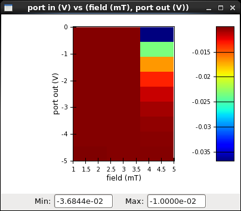

Colormapped plot¶
The colormapped plot display allows for the display of one dimension in the color space versus two other dimensions in the plane.

Pan & zoom¶
See also
In addition to zooming within the plane, the colormapped plot allows for zooming in the color space. Changing the values in the “Min” and “Max” fields, followed by pressing the enter key (once for each changed value) will change the bounds of the color space (and consequently of the legend).
In order to hilight a particular value region, one can also click the right mouse button on the legend and drag along the legend. This will select the region to be hilighted; everything outside this region will be dimmed: